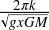
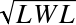

The physics of ships is a vast subject. While the same principles govern canoes and super tankers, the difference between the two scales is not trivial. Our goal in this chapter will be to explain some of the fundamental physical principles to allow you to develop realistic simulations. The typical displacement-type ship lends itself well to illustrating these principles; however, many of these principles also apply to other objects submerged or partially submerged in a fluid, such as submarines and air balloons. Remember, air is considered a fluid when we are considering buoyancy.
While surface ships or ships that operate on the water’s surface (at the air water interface) are similar to fully submerged objects like submarines or air balloons in that they all experience buoyancy, there are some very distinct differences in their physical nature that we’ll highlight in this chapter. These differences affect their behavior, so it is important to be aware of them if you intend to simulate such objects.
Ships have an entire language of their own, so we’ll be spending a lot of time just getting the vocabulary right. This will allow you to do further research on any topics that are of particular interest. There are many ways to classify ships and boats, but in regards to the physics governing them, there are three basic types. Displacement vessels, semi-displacement vessels, and planing vessels are named after the forces that keep the boat afloat while it is at cruising speed. When not moving, all vessels are in displacement mode.
The term displacement in this context means that the ship is supported solely by buoyancy—that is, without dynamic or aerostatic lift as you would see on a high-speed racing boat or a hovercraft. The word displacement itself refers to the volume of water displaced or “pushed” out of the way by the ship as it sits floating in the water. We’ll discuss this more in the next section.
A planing vessel is one that is not supported by buoyancy, but by hydrodynamic lift. This includes the everyday speedboats that most boaters own. When the boat isn’t moving, it just floats in the water, bobbing up and down. However, when the boat begins traveling at high speed, the force of the water hitting the bottom of the boat causes the boat to rise up. This is known as planing, and it greatly reduces the resistance of the vessel. Semi-displacement vessels are those that straddle the two categories, with some support coming from buoyancy and some coming from planing forces. Before we continue discussing this, let’s go over some vocabulary.
The hull of the ship is the watertight part of the ship that actually displaces the water. Everything in or on the ship is contained within the hull, which is partially submerged in the water. The length of the ship is the distance measured from the bow to the stern. In practice, there are several lengths used to denote the length of a ship, but here we’ll refer to the overall length of the hull. The bow is the front of the ship, while the stern is the aft part. When you are on the ship facing the bow, the port side is to your left and the starboard side is to your right. The overall height of the hull is called the depth, and its width is called breadth or beam. When a ship is floating in the water, the distance from the water surface to the bottom of the hull is called the draft. Figure 16-1 illustrates these terms.
Given that ship design is a diverse subject, we’ll limit ourselves to discussing those aspects of ships that make for realistic models. These subjects include stability and sinking, resistance characteristics, propulstion, and manuverability. Most of these subjects cannot be fully simulated in real time, so we’ll show you some general rules that ships follow instead of full numerical simulation.
If you have boats in your video game, the first step to making them realistic physically is allowing them to sink if they become damaged. To understand why boats sink and how they do so, you must first understand stability.
Most boats are least stable about their longitudinal axis—that is, they are easier to heel port and starboard than they are to flip end over end. If the vessel heels over so far that it is upside down, this is called capsizing. This is how most boats sink due to wind, waves, or in some cases of side damage. One of the most famous examples of a sinking ship, the Titanic, shows that when a boat is sinking from damage, it can sink end over end, sometimes with the ship breaking in two. We’ll discuss both here so that you can animate realistic sinking in your simulation.
In Chapter 3 we introduced the concept of buoyancy and stated that the force on a submerged object due to buoyancy is a function of the submerged volume of the object. Archimedes’s principle states that the weight of an object floating in a fluid is equal to the weight of the volume of fluid displaced by the object. This is an important principle. It says that a ship of a given weight must have sufficient volume to displace enough water, an amount equal to the weight of the ship, in order for it to float. Further, this principle provides a clever way of determining the weight of a ship: simply measure or calculate the amount of water displaced by the ship and you can calculate the weight of the ship. In the marine field, displacement is synonymous with the weight of the ship.
As discussed in Chapter 3, we can calculate the buoyant force on any object by using the following formula:
| FB = ρ g ∇ |
Here, ∇ is the submerged volume of the object, ρ is the density of the fluid within which the object is submerged, and g is the acceleration due to gravity. Since buoyancy is a force, it has both magnitude and direction, and always acts straight up through the center of buoyancy. The center of buoyancy is the geometric center of the submerged part of the object.
When a ship is floating in equilibrium on the surface of the water, its center of buoyancy must be located directly below the ship’s center of gravity. The weight of the ship, a force, acts straight down through the center of gravity, opposing the force due to buoyancy. When the ship is in equilibrium, these two forces, weight and buoyancy, are equal in magnitude and opposite in direction.
Now, when an external force causes the ship to roll or pitch, the portion of the hull below the water is changed and the center of buoyancy moves to the new geometric centroid of the underwater portion of the hull. For example, if the ship rolls to the starboard side, then the center of buoyancy shiwfts out toward the starboard side. When this happens, the lines of action of the weight of the ship and the buoyant force are no longer in line, which results in a moment (torque) that acts on the ship. This torque is equal to the perpendicular distance between the lines of action of the forces times the weight of the ship.
Now here’s where we get to the floating upright part that we mentioned earlier. When a ship rolls, for example, you don’t want it to keep rolling until it capsizes. Instead, you want it to gently return itself to the upright position after whatever force caused it to roll—the wind, for example—has been removed. In short, you want the ship to be stable. For a ship to be stable, the line of action of the buoyant force must cross the vessel’s centerline at a point, called the metacenter, above the center of gravity. When this happens, the moment developed when the ship rolls tends to restore the ship to the upright position. If the metacenter is located below the center of gravity, then the moment developed would tend to capsize the ship. The distance between the center of gravity and the metacenter is called GM. This is also known as the stability index, as a positive value means the floating body is stable and a negative GM means the body is unstable. Figure 16-2 illustrates these two scenarios.
If you’re a sailor, then you know how important it is to keep the center of gravity of your boat low. This helps increase the height of the metacenter above the center of gravity, and thus helps with stability.
In the case of fully submerged objects, like submarines, the situation is different. The buoyant force still acts through the geometric centroid of the object, but for stability, the center of buoyancy must be located above the center of gravity. This way, when the object rotates, the lines of action of the weight of the object and the buoyant force are separated and form a moment that tends to restore the object to its upright position. If it’s the other way around, then the object would be unstable, like trying to balance one bowling ball on top of another. In this case, the slightest disturbance would upset the balance and the object would flip upside-down such that the center of gravity is located below the center of buoyancy.
In general, boats protect their stability by compartmentalizing the hull into several watertight sections, fittingly called compartments. This way, if the side of a vessel hits an iceberg, only the compartment damaged will flood with seawater. If enough compartments are damaged, the vessel will not have enough buoyancy to support its weight and it will sink. The end with the flooded compartments will sink first, causing a large angle about the transverse axis. This is what happened to the Titanic. In fact, in that ship’s case, the angle, called trim, was so large that the stern was lifted out of the water. The hull could not support the weight of the stern section that was no longer being supported by buoyancy, and the structure ripped in two.
It should be noted that ships can sink in the matter of minutes, or it can take hours. For instance, the Titanic took about three hours to sink. The Lusitania sank in 18 minutes. The time it takes depends heavily on the type of damage and the construction of the vessel. We don’t suggest trying to get players to wait three hours for their game to end; however, it is possible to continue fighting/propelling a vessel that is terminally damaged. In many cases where terminal damage is suspected, captains endeavor to ground their vessels to prevent the ship from actually going under.
If side damage occurs, especially in high wind and waves, then it could be that the vessel can still have enough buoyancy to float, but no longer enough stability to remain upright. As damage usually occurs only on one side of a vessel, the center of buoyancy will no longer be on centerline. This means that the restoring moment in one direction is diminished by whatever amount the center has moved to that side. A big wave comes along and pushes the vessel over to the point where the righting arm is no longer positive. The vessel will flip 180 degrees with the bottom pointed skyward but will still float (capsizing). Once rolled over, the remaining compartments will tend to fill with water as vents or other openings fail over time. In the case of recreational boats, they are usually only a single compartment. If they capsize, they will sink readily; indeed, this is the way that most small boats sink.
As we mentioned before, accurately computing all degrees of freedom for a nontrivial-shaped body in real time would be difficult to accomplish with today’s computer hardware. In general, you want to follow a few high-level rules:
The higher the center of gravity, the more likely it is that the boat will tip over.
Large vessels are always compartmentalized. Damage should be limited to the watertight compartment in which it occurred.
The vessel will heal or trim in the direction of damage. If damage occurs on the starboard side, the boat will heel to starboard. If the damage occurs in the bow, the boat will list forward.
A boat will remain floating as long as the undamaged compartments have a volume in cubic meters of at least the weight of the hull in metric tons divided by 1.025.
After being damaged, even if a vessel has enough undamaged volume to remain afloat, it doesn’t necessarily mean it will float upright.
Sinking almost never occurs as quickly as depicted in video games; however, capsizing can occur rapidly and is probably a more realistic way to model a stability failure.
Closely related to ship stability is the subject of ship motions. Knowing how vessels work in a random set of waves will greatly help you to increase realism in your games. The most important aspect of this is coupled motions, which we will talk about shortly. First, some more vocabulary! As discussed before, there are six degrees of motion any rigid body is capable of; for boats, some of these have special names and are described next and illustrated in Figure 16-3.
Roll, pitch, and yaw are the terms also used for airplanes. The translation degrees of freedom are called surge, heave, and sway. Surge, sway, and yaw are not that apparent when vessels are moving forward, so it is acceptable to limit your model to heave, pitch, and roll. Heave is the up-and-down motion of the boat caused by the change in elevation of the water’s surface as a wave passes. If a vessel is stationary, it would be referred to as bobbing. Pitch is the rotation about the transverse axis of the vessel due to increased buoyancy on one end of the ship as a wave passes. This motion is most pronounced when the waves are traveling in the same direction (or 180 degrees) from the vessel. Roll is like pitch, but about the longitudinal axis.
As stated before, heave is displacement in the vertical direction from the static equilibrium draft. This degree of freedom is straightforward to model as a hydrostatic spring acting in the vertical direction. Assuming we have a barge that is 30 meters long and 10 meters wide, we’ll develop an equation that can govern our heave simulation.
Commonly, a vessel’s hydrostatics include something called tons per centimeter immersion (TPCM)—that is, for every centimeter you press the boat down, a certain number of tons of buoyancy force is created. For our barge, this is a relatively straightforward calculation.
Given that the water plane area is a constant 300 square meters, 1 centimeter of immersion would result in a volume of 3 cubic meters. As 1 cubic meter of saltwater weighs 1,027 kg, 3 cubic meters would be 3,081 kg, and (assuming this boat is on Earth), would result in a buoyant force of 3,081 kg × 9.81 m/s2, or 30.2 kN. Therefore, 30.2 kN per cm would make a good starting value for a spring constant to model the heave response of this vessel in waves.
For us to simulate realistic roll motions, it is important that the ship take time to complete the motion. This time is called the roll period. This defines the angular velocity that a ship rolled to one side will experience when it recovers. We can estimate it by the following equation:
| T =  |
Where k is the radius of gyration and GM is the distance from the metacenter to the center of gravity. A good estimate for the radius of gyration is often taken as 30% of the beam of the vessel. A vessel with a shorter roll period will respond quicker to a wave and try to assume the wave slope. This is known as being “stiff” and can cause passenger discomfort and damage via higher angular accelerations. Conversely, vessels with higher roll periods are known as “tender” and lag behind the waves. These vessels generally heel farther over but are more comfortable for passengers.
Likewise, there is a pitch period that measures the speed at which the vessel responds to a wave. This is highly dependent on the length of a ship and can be estimated as follows:
| T = (2π / g1/2)(k/(GM)1/2) |
Where k is the radius of gyration and is commonly taken as 30% of the beam. Note that pitch period is normally one-third to one-half that of roll period, so that the bow of a vessel will rise and fall with the wave more in phase than in a roll event.
The real trick to getting motions to look right is to understand that for most boats the motions are coupled. For instance, heave and pitch are strongly coupled. This means that if a wave causes your boat to heave, it will most likely also cause it to pitch. This is because the distribution of buoyancy along the hull is not constant. If the waterline is raised some constant value, there is usually more buoyancy provided aft than there is forward for the same change in waterline. This will cause the vessel to pitch forward to move the center of buoyancy to the longitudinal location of the center of gravity. Similarly, a pitch event will cause the vessel to heave because if the stern is lifted from the water, there is usually a loss of total buoyancy, and the boat will sink farther into the water.
Resistance is the amount of force it takes to move a body through the water. Propulsion is the method by which you create that force.
In Chapter 3, we discussed drag forces on objects moving through a fluid. Specifically, we discussed frictional and pressure drag. Ships moving on the water’s surface experience these drag forces; however, at the air-water interface, there are other drag components that you have to consider. If you were to write an equation breaking up the total resistance acting on a ship into its three main components, that equation would look something like this:
| Rtotal = Rfriction + Rpressure + Rwaves |
We’ll describe each of these components and give you some empirical formulas in just a moment. First, however, we want to qualify the material to follow by saying it is very general in nature and applicable only when little detail is known about the complete geometry of the particular ship under consideration. In the practice of ship design, these formulas would be used only in the very early stages of the design process to approximate resistance. That said, they are very useful for getting in the ballpark, so to speak, and (sometimes more importantly) in performing parametric studies to see the effects of changes in major parameters.
The first resistance component is the frictional drag on the underwater surface of the hull as it moves through the water. This is the same as the frictional drag that we discussed in Chapter 3. However, for ships there’s a convenient set of empirical formulas that you can use to calculate this force:
| Rfriction = (1/2) ρ V2 S Cf |
In this formula, ρ is the density of water, V is the speed of the ship, S is the surface area of the underwater portion of the hull, and Cf is the coefficient of frictional resistance. You can use this empirical formula to calculate Cf:
| Cf = 0.075 / (log10 Rn – 2)2 |
Here, Rn is the Reynolds number, as defined in Chapter 6, based on the length of the ship’s hull. This formula was adopted in 1957 by the International Towing Tank Conference (ITTC) and is widely used in the field of naval architecture for estimating frictional resistance coefficients for ships.
To apply the formula for Rfriction, you’ll also have to know the surface area, S, of the underwater portion of the hull. You can directly calculate this area using numerical integration techniques, similar to those for calculating volume, or you can use yet another empirical formula:
| S = Cws √(∇L) |
In this formula, ∇ is the displaced volume, L the length of the ship, and Cws is the wetted surface coefficient. This coefficient is a function of the ship’s shape—its breadth-to-draft ratio—and statistically it ranges from 2.6 to 2.9 for typical displacement hull forms.
The pressure drag experienced by a ship is the same as that experienced by projectiles as discussed in Chapter 3. Remember, this drag is due to the viscous effects causing a region of relatively low pressure behind the ship. Quantifying this force is difficult for ships of arbitrary geometry. We can use computational fluid dynamics algorithms to approximate this force, but this requires detailed knowledge of the hull geometry and a whole lot of time-consuming computations. An alternative is to rely on scale-model test data where results from the model test are extrapolated to approximate drag on the full-size ship.
Just like pressure drag, wave drag is difficult to compute, and we usually rely on model testing in practice. Wave drag is due to the energy transfer, or momentum transfer, from the ship to the fluid, or in other words, it’s a function of the work done by the ship on the surrounding fluid to generate the waves. The visible presence of wave resistance is evident in the large bow wave that builds up at the front of the ship as well as the wave system that originates at the stern of the ship as it moves through the water. These waves affect the pressure distribution around the ship and thus affect the pressure drag, which makes it difficult for us to separate the wave drag component from pressure drag when performing an analysis.
When scale model tests are performed, pressure drag and wave drag are usually lumped together in what’s known as residual resistance. Analogous to the coefficient of frictional drag, you can determine a coefficient of residual resistance, such that:
| Rr = Rpressure + Rwave = (1/2) ρ V2 S Cr |
Here Rr is the total residual resistance, and Cr is the coefficient of residual resistance.
There are many resistance estimation methods available that allow you to estimate the coefficient of residual resistance for a ship; however, they are usually presented for specific ship types. For example, one method might give empirical formulas for Cr for destroyer-type ships, while another might give formulas for Cr for large oil tankers. The trick, of course, is to choose a method appropriate for the type of ship you are analyzing.[29] Generally, Cr increases as the displacement and speed of the ship increase. A typical range for Cr for large displacement hulls is from 1.0e–3 to 3.0e–3.
While these three resistance components—friction, pressure, and wave—are the most important for typical displacement-type ships, they aren’t the only ones. Since a ship operates at the air-water interface, a large part of its structure is above the water surface, exposed to the air. This means that the ship will also experience air resistance. You can approximate this air resistance using the following formula:
| Rair = (1/2) ρ V2 Ap Cair |
Here, Cair is the coefficient of air resistance, ρ is the density of air, V is the speed of the ship, and Ap is the projected transverse (profile) area of the ship. Cair typically ranges from 0.6 to 1.1, depending on the type of ship. Tankers and large cargo ships tend to be near the upper end of the range, while combatant ships tend to be near the lower end. In lieu of enough information to calculate the projected transverse area of the ship, you can approximate it by:
| Ap = B2/2 |
where B is the breadth (width) of the ship.
Planing craft are different than displacement vessels in that when they reach their cruising speed they are not supported by buoyancy. Unlike a super tanker, a recreational speedboat has a much “flatter” hull form. It almost looks like a very fat foil, which it is! When a speedboat is just sitting in the water it is fully supported by its buoyancy, just like a tanker. However, as the boat starts moving forward, the hull is at an angle of attack to the water. Like a super tanker, the boat is also creating a wave in front of it as it moves, called the bow wave. However, similar to an airplane breaking the sound barrier, a planing craft is fast enough to catch up to this wave. As it reaches its own bow wave, the vessel will start to tilt backward. This tilting increases the resistance by virtue of increasing the angle of attack of the vessel’s hull. However, if the vessel has additional power to overcome this increased resistance, the lift force generated from the hull foil will begin to lift the hull out of the water. At this point, the forces in Figure 16-4 begin to dominate.
As you can see, compared to when the boat is at rest, very little of the hull is in the water now. This, in turn, provides positive feedback because it reduces the wetted surface area and skin friction and allows the craft to go faster, generating more lift and reducing the skin friction yet again. Simultaneously, the drag created by the foil moving through the fluid increases until eventually the available power is exhausted and top speed is attained. If we plot the resistance versus speed, it might look something like Figure 16-5.
Notice the hump region. This is where the vessel trims aft in the transition mode and there is a rise in the resistance. There have been embarrassing cases where a vessel, although having enough power to make the design speed once over the humps, lacked the power to make the transition.
The concept of virtual mass is important for calculating the acceleration of a ship in a real-time simulator. Virtual mass is equal to the mass of the ship plus the mass of the water that is accelerated with the ship.
Back in Chapter 3 we told you about the viscous boundary layer, and we said that the relative velocity (relative to the moving body) of the fluid particles near the moving body’s surface is 0 at the body surface and increases to the free stream velocity as distance from the body surface increases. Essentially, some of the fluid sticks to the body as it moves and is accelerated with the body. Since the velocity of the fluid varies within the boundary layer, so does the acceleration. The added mass, the mass of water that gets accelerated, is a weighted integration of the entire mass of fluid that is affected by the body’s acceleration.
For a ship, the viscous boundary layer can be quite thick, up to several feet near the end of the ship depending on its length, and the mass of water that gets accelerated is significant. Therefore, when doing any sort of analysis that involves the acceleration of the ship, you need to consider added mass, too. The calculation of added mass is beyond the scope of this book. We should also point out that, unlike mass, added mass is a tensor—that is, it depends on the direction of acceleration. Further, added mass applies to both linear and angular motion.
Added mass is typically expressed in terms of an added mass coefficient, which equals the added mass divided by the mass of the ship. Some methods actually integrate over the actual hull surface, while others approximate the hull as an ellipsoid with proportions matching the ship’s. Using this approximation, the ellipsoid’s length corresponds to the ship’s length while its width corresponds to the ship’s breadth. For longitudinal motion (that is, linear motion along an axis parallel to the ship’s length), the added mass coefficient varies nearly linearly from 0.0 at a breadth-to-length ratio of 0 (the ship is infinitely thin) up to 0.5 at a breadth-to-length ratio of 1 (a sphere).
When the added mass coefficient is expressed as a percentage of the ship’s mass, virtual mass can be calculated as mv = m (1 + xa), where m is mass, and xa is the added mass coefficient—for example, 0.2 for 20%. For typical displacement ship proportions, the longitudinal added mass ranges from about 4% to 15% of the mass of the ship. Conservative estimates generally use 20%.
To provide some guidance, Table 16-1 provides common ship types and appropriate speed ranges. This will help guide you in properly simulating the resistance of your vessel.
Vessel type | Speed (knots) | Horsepower (hp) |
Aircraft carrier | 31.5 | 260,000 |
Cruiser | 30 | 80,000 |
Oil tanker | 15–20 | 20,000–60,000 |
Containership | 21 | 100,000 |
200-foot yacht | 15.5 | 4,000 |
35-foot recreational boat | 30 | 420 |
35-foot speedboat | 70 | 1,200 |
40-foot sailboat | 8.5 | N/A |
Note that at a certain speed, for non-planing hulls, there is a theoretical limit to how fast a boat can go. This speed is called the hull speed. At the hull speed the bow and stern waves reinforce each other, and there is a rise in wave-making resistance. This can be a barrier for some fuller hulls. Note that the speed for the 40-foot sailboat is the hull speed of a 40-foot full-formed (not slender) hull. We can calculate the hull speed with the following formula:
| Vhull ≈ 1.34 ×  |
Where Vhull is the hull speed in knots and LWL is the length on the water line. Some modern displacement boats, especially racing kayaks, can exceed their hull speed if they have very fine ends, long hulls with narrow beams, or some other optimized hull form.
There are a variety of methods to propel a boat through the water. The oldest is by way of sails using the wind. The physics of sailing could fill several chapters on its own, so we won’t go into detail here. If you are interested in that topic, The Physics of Sailing Explained (Sheridan House), by Bryon Anderson, is a good starting point. You can also check out the airplane chapter in this book and note that a sail is just a vertical wing. We will say this: if you choose to put a sailing vessel in your simulation, make sure to remember the golden rule! You cannot generally sail within 45 degrees of the direction the wind is coming from.
There are many different kinds of propulsion: rudders, shafted fixed-pitch propellers, shafted CPP propellers, azimuthing thrusters, propellers in nozzles, water jets, pump jets, contra-rotating, and the very odd Voith Schneider type. We can’t get into all of them here, but the aforementioned list should get you started if you are interesting in modeling the specifics of different propulsor types.
The major propulsion relationship for your simulation would be the thrust-to-propeller RPM or thrust-to-throttle curve. The fly in the ointment here is that thrust is also dependent on forward speed. As the boat moves faster and faster through the water, the inflow velocity of the water into the propeller is higher and higher. This means that the difference between the velocity of the intake and the velocity of the output is smaller, reducing the amount of thrust. In general, the thrust curve versus boat speed will look like Figure 16-6.
An important physical phenomenon concerning propulsion that you may want to incorporate is cavitation. Cavitation occurs when a propeller is moving fast enough that the low-pressure side of the blade starts spontaneously creating vapor bubbles. These bubbles exist for a short while, and then as the propeller turns, the static pressure changes. This higher static pressure causes the bubbles to collapse violently. This collapse is so fast and furious that it can cause metal erosion at a high rate. It will eat away at a propeller until it is no longer producing thrust. It is also very noisy. That is why submarine propellers are shaped very differently than other ships’ propellers. They seek to limit cavitations so they’re not heard by enemy vessels. The damage caused by cavitation also creates a speed limit on RPMs for a propeller. Cavitation is a real-life phenomenon you can exploit to penalize the player for driving around at high speed all the time.
Another aspect of ships and boats that is often oversimplified is maneuverability. Maneuverability is also a very complex topic whose numerical simulation is beyond the current realm of real-time simulation. However, with some simplifications and assumptions, it can be more accurately modeled than if you do not know the underlying framework. Almost all vessels maneuver by way of two methods: rudders or thrust vectoring. The users generally won’t care about the differences, so you can model both by angling the thrust vector off-center.
Although rudders and thrust vectoring have the same result, there are some important differences. A thrust vectoring system, like a jet boat, can steer only when the vessel is producing thrust. A rudder, on the other hand, works only when the vessel has forward speed. If the boat isn’t moving forward with enough speed, then the rudder can’t produce a turning moment.
If you keep in mind those differences, you can model both systems the same way. The most important thing to keep in mind when modeling larger ships in your games is that they take significant time to respond to control inputs. Figure 16-7 tracks the heading of a ship over time during what is called the 10/10 maneuver.
A vessel is moving in a straight line, and the rudder is put over 10 degrees in one direction. Once the vessel’s heading changes 10 degrees, the rudder is moved to the opposite side at the same angle. The initial turning time is the time it took for the vessel to change its heading 10 degrees. As large ships have enormous momentum, they will continue to turn even though the rudder is in the opposite direction. The maximum deviation from the original heading minus the 10 degrees at which the rudder was flipped is called the overshoot angle. The size of this angle is one measure of how slow the vessel is to respond to the helm. For larger ships, this can be between 15 degrees when light and 45 degrees when loaded with cargo.
The time to check yaw is the time in seconds it takes for the overshoot angle to be achieved and the vessel to start changing its heading again. This is repeated for the other side to detect any bias a vessel may have for turning in a particular direction. The moral of the story is that for anything other than a high-speed small craft, boats and ships can take a significant amount of time to respond to the helm. Your simulation should strive to reproduce a turning ability that matches Figure 16-7 for extra realism.
A special kind of thrust vectoring is called throttle steering. Imagine that a boat has two engines. If one is run in forward and the other in reverse, the vessel will turn quite rapidly. For a twin-engine vessel operating in close quarters, the rudders are often centered and the vessel maneuvered solely by altering the throttle settings of the two props.
Another interesting maneuvering phenomenon that is closely related to thrust vectoring is called propeller walk, or prop walk. This is especially important for vessels with only one propeller moving in tight spaces. The cause of propeller walk is related to the fact that most propellers are installed at an angle to the horizon. This angle causes the thrust to be greater when the blades are moving down than when the blades are moving upward. In a propeller that turns clockwise, this creates a push to the right.
In forward gear the rudder is very effective at countering the propeller walk, but in reverse the rudder is much less effective, making the propeller walk much more noticeable. This can add a significant amount of realism when you are simulating vessels in docking maneuvers.
[29] These methods are quite involved and there are far too many to discuss here, so we’ve included some references in the Bibliography for you.